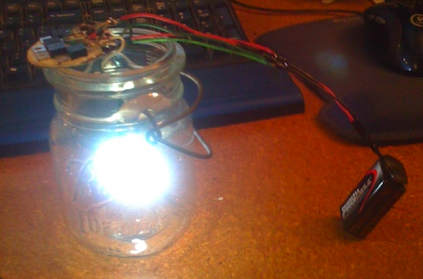
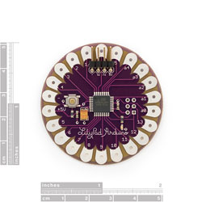

Is anyone satisfied with the way that flicker candles look on stage? If you didn’t raise your hand, then read on. If you did raise your hand, well, keep reading anyways. On the surface, this article is about designing & building a bright, adjustable flicker candle. I’ll let you in on a secret: the candle itself is only a foil. Dig deeper and you will find the untapped potential (in most theatres) of the hardware at the heart of the effect: an open source microprocessor. I feel I may have lost half of the readers right there, but I insist you hang on. The candle may be nifty in its own right, but when you realize the potential and flexibility packed into this bit of hardware, your top will pop… So I urge you, read on.
The Challenge
A co-production of Carousel recently opened at the Long Wharf Theatre in New Haven, CT. One of the perks of being the second theatre in a co-production is the chance to improve on various aspects of the production. In the case of Carousel, the design team & director requested more light during the heaven scene. From the electric department’s standpoint this was easy; hang more lights. Here’s the rub: during the scene actors carry glass jars on stage. These jars house candles that would be hung on the back wall and “become” the stars of heaven. The props department was faced with a challenge. How do they find 12 candles (in a week) that had enough punch to be seen onstage during a deluge of heavenly light?
Sifting Through the Options
Criteria was quickly drawn up. The candles would need to:
- Be bright enough to be seen on stage
- Produce a believable flicker that would serve both as a candle and as a star
- Run on a battery
- Be compact enough to fit in the top of a mason jar
- Last the duration of the scene (approx. 20 minutes)
- Be sturdy enough to survive the rigors of the run
- Be acquired in the span of a week (12 candles total)
- A bonus: the ability for the flicker to be adjusted
After a day of research, it was apparent that readily available commercial flicker lights & lamps fell short before we got very far. I proposed that we build custom flicker lamps. The effect is summed up as follows: we used an microprocessor board to control the flicker of four bright LEDs. A prototype was built and money was secured for the project, we were in business. The plans and breakdown of the flicker lights follow, but first…
The Microprocessor
The brain of the effect is a microprocessor. What is a microprocessor? It is a simple computer that has inputs and outputs. Typically the inputs are connected to switches, sensors, computers and the like. The outputs are connected to motors, LEDs, computers and such. You load code into the microprocessor, and the device will use the inputs and outputs however the code tells it to. You can also attach bluetooth, zigbee and other wired & wireless communication modules to microprocessor boards. (More on microprocessors.)
Perhaps now you have a grasp on how much potential this technology has for use in theatre effects. Microprocessors have been around for years and years, they reside in almost all digital devices, your clock radio, pedometer & calculator are only the tip of the iceberg. Why aren’t they more more widely used in home-brew theatre effects? Price, expertise, and more expertise used to be mighty good reasons. Recent years have shown the pro/con teeter-totter tipping the other way. The components are now cheap, programming is not nearly as daunting as it used to be, and a huge online community of hobbyists and professionals are only a few clicks away. 
The microprocessors that were selected to control the candles were Arduinos. An Arduino is an open source hardware project that is designed to be simple to program, readily available, cheap and well supported by the developers & hobbyist community. There are several different Arduino form factors (read: sizes). You can read about them at the Arduino hardware page. The specific models we chose was the Arduino Lilypad. The Lilypads are designed to be sewn into clothing, and as such they are water resistant, compact (2" in diameter) and are very thin. At $20 dollars a pop, they didn’t break the bank either.
The Candle Flicker Circuit
{kind=link}
You can download a pdf of the schematic here: FlickerCircuit.pdf
This setup is powered by a single 9 volt battery. Notice the power distribution part of the schematic? The voltage is divided into two different values to feed different components of the effect. The Lily pad is powered by the 4.5 volt leg, while the LEDs are driven by the 9 volt leg. The max input voltage of the Lilypad is 5v; any more and you will fry its little brain (also note that if you cross the positive and negative power inputs of the Lilypad, it will short out.) Each candle unit utilizes four 360 degree white LEDs (you can find them at Superbrightleds.com.) Note that the LEDs can only withstand a maximum of 3.3 volts. The resistors (R2) in series with the LEDs drop the voltage to below the 3.3v maximum. Each LED is controlled via a different Lilypad output, allowing the LEDs to flicker independently of each other.
Unfortunately, the Lilypad cannot provide enough current to drive the LEDs to their full brightness. Enter the mosfets (M1.) The mosfets act like relays (switches.) They are connected directly to the 9 volt battery (pins S & D in the schematic) and to the Lilypad output (G). When the Lilypad sends a signal to the gate in the mosfet chips, the mosfets close the connection between the S & D pins, allowing the 9 volts to travel to the LED while keeping the Lilypad seperate from the 9 volts of doom. Since the Mosfets are connected to the Lilypad’s built-in PWM (pulse width modulation) outputs, they are switched on and off fast enough to give the illusion of dimming. This dimming fluctuates wildly, and is random (within limits imposed by the programing.) This is what creates the LED flicker. Group four LEDs each doing their own flicker dance, and it starts to look believable.
The Code
You’ve got everything wired up and plugged in, but until you tell the microprossessor what to do, it won’t do a thing but sit there and look pretty. The code that tells the Audrino what to do is programmed on a computer (Windows, OS X, or Linux) and downloaded into the microprocessor with a usb cable. The Audrino then simply follows the instructions you’ve given it. The Audrino project has developed a free code editor (available here) that allows you to edit code and download it into the device. The code itself is a simple varient of the C programming language. There are coding tutorials on the same page as the software. If you don’t know how to code, I would highly reccomend you give it a go. The code itself is fairly simple to learn. A hint, you can learn much faster by examining other people’s programs. Which brings up a another thing; there are a whole lotta’ programs available online. They do everything from controlling motors to controlling other computers. For the flicker candle effect, I actually used code that I found online and adjusted a few variables related to flicker timing. Being able to use someone else’s code saved a lot of time. It allowed me to shave about a day from the development proccess. Note that there is a large amount of support available online. If you get hung up on a project, just stroll around the support forums and start asking questions. The original flicker code is found here (in text format). The code was orginally found at the bottom of this page.
Criticisms
A discussion of this technology for theatrical use would be incomplete unless I mention possible drawbacks of the technology. As with any homebrew system, there is no warranty or guaranteed support for the hardware. While the microprocessing online community is strong, there is no garantee that any of them will be able to help you with a specific problem. From what I’ve seen of the interchange on support forums, I don’t think there will be many instances where you will get stranded with a problem, but the possibility does exist.
The largest hurdle most people will face when dealing with these bad boys is the code. For those who are familar with computer programming, learning to program the microprocessors is relatively easy. For those who are completely new to programming, I urge you to give it a shot. It is easier than most people think, and can be very rewarding. At the very least you will be able to add it to your resume. There is certainly a trend of increasing familarity with computer programming among technicians. This helps matters, because chances are that there is at least one person on staff that has experience with programming.
Parting Notes
So lets sum up. Arduinos are relatively cheap and very flexible. You can do just about anything with this hardware. Example: (back to the flicker candles) if we had the time and money, we would have connected a small motion sensor to each board and had the flickers behave differently based upon how the candles were moving. Imagine the candles flicker like candles while they were being carried by actors (movement) and slowly fading to a twinkling star effect after the candles were hung on the wall (not moving for x amount of time.) One last thing, and this is for the professors out there. Consider having your students do a project based around the Arduino.
You can find some videos of the candles in action here.
[gallery link=“file”]